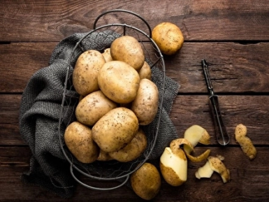

Patates Diyeti Nedir Nasıl Yapılır?
Patates, pişirme alternatifleri dolayısıyla da oldukça kullanışlı bir sebzedir. Bu sebze haşlanabilir, buharda pişirilebilir, kızartılabilir, fırınlanabilir veya kızartılabilir. Yapım türüne göre farklı yemeklerde kullanılabilir...
Devamını Oku